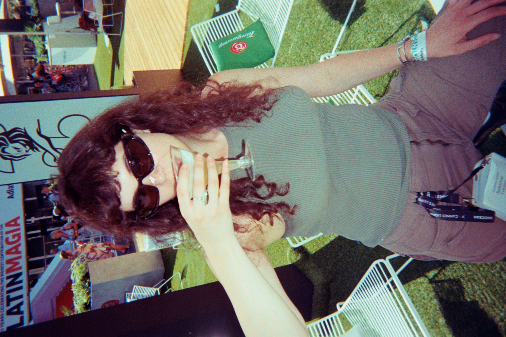
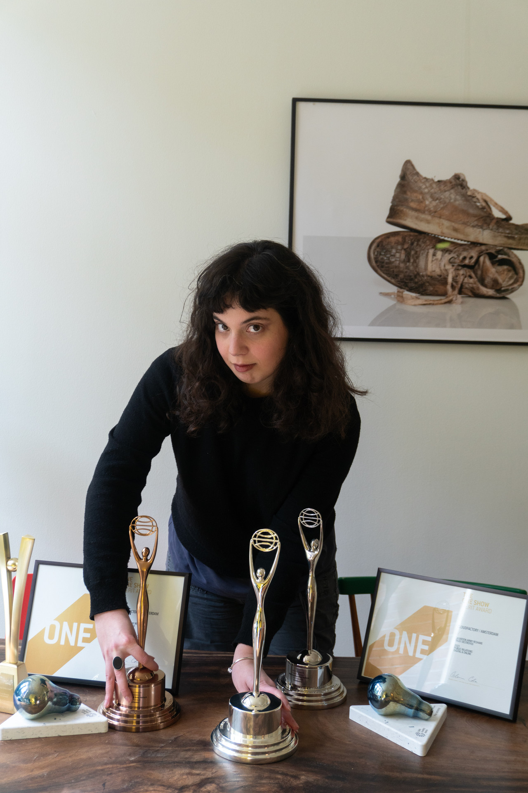
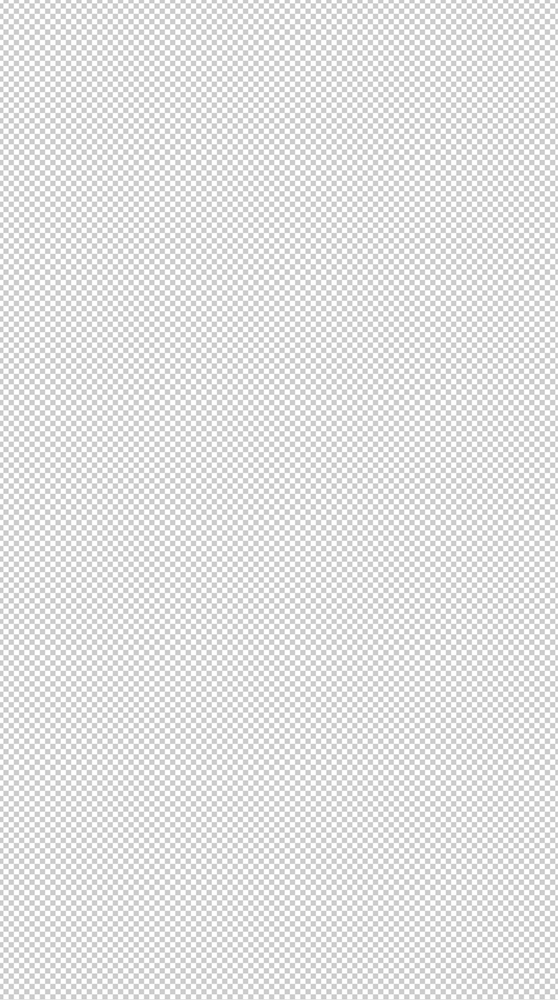

SAKO TENZ /
TVILDIANI_
WORK EXPERIENCE_
- 17.02.2025 - Present - Sr. ADSuperHeroes, Amsterdam, NL
- 01.01.2023 - 01.04.2024 - ADCloudFactory Amsterdam, NL
- 01.04.2022 - 01.12.2022 Intern ADCloudFactory Amsterdam, NL
- 01.07.2022 - 01.09.2022 Intern ADINNOCEAN Berlin, DE
- 01.09.2021 - Present - Production DesignerVirtual Production Limoni, Tbilisi, GE
- 03.2019 - 01.12.2021 - Co-Founder/ CDMedia & Production Company Sight Georgia, Tbilisi, GE
- 01.01.2018 - 01.03.2019 - Senior DesignerDesign Studio Saini, Tbilisi, GE
- 01.01.2017 - 27.12.2017 - Senior DesignerNon Profit Ira Kokhreidze’s “Inclusive Theatre Contact”, Tbilisi, GE
- 01.04.2016 - 01.09.2016 - Producer/Director AssistantShort Film
“The Perfect Order”
One Small Production, Tbilisi, GE - 01.04.2015 - 01.09.2015 - Actress / AssistantShort Film
“Till the End of the day"
One Small Production, Tbilisi, GE

AWARDS_
- Cannes Young Lions Georgia 2025- PR- Gold,
- Cannes Lions Awards 2023 - PR- Shortlist
- Cannes Lions Awards 2023 - PR- Shortlist
- Cannes Lions Awards 2023 - Brand Experience and Activation - Shortlist
- Merit Award 2023 - One Show
- Clio Awards 2023 - Real Time Response - Silver
- Clio Awards 2023 - Use of Fashion & Beauty - Silver
- Clio Awards 2023 - Cause Related - Bronze
- The One Show 2023 - Innovation in PR - Shortlist
- The One Show 2023 - Digital & Online - Shortlist
- The One Show 2023 - Current Event Response - Shortlist
- PHNX Awards 2023 - Business Activation - Shortlist
- Eurobest Awards 2022 - Business Activation - Bronze
- Eurobest Awards 2022 PR - Shortlist
- ADCN The Dutch Creativity awards 2022 - PR - Silver
- ADCN The Dutch Creativity awards 2022 - Business and Activation - Silver
- Fudge Portfolio Award - Top Dog 2021
- Fudge Portfolio Award - Top Dog 2020
Other Awards:
- Sarajevo Film Festival (Bosnia and Herzegovina, 2017)
- Batumi Film Festival (Georgia, 2017)
- Tbilisi International Film Festival (Georgian Panorama)
- Innsbruck Film Festival (Austria, 2018)
